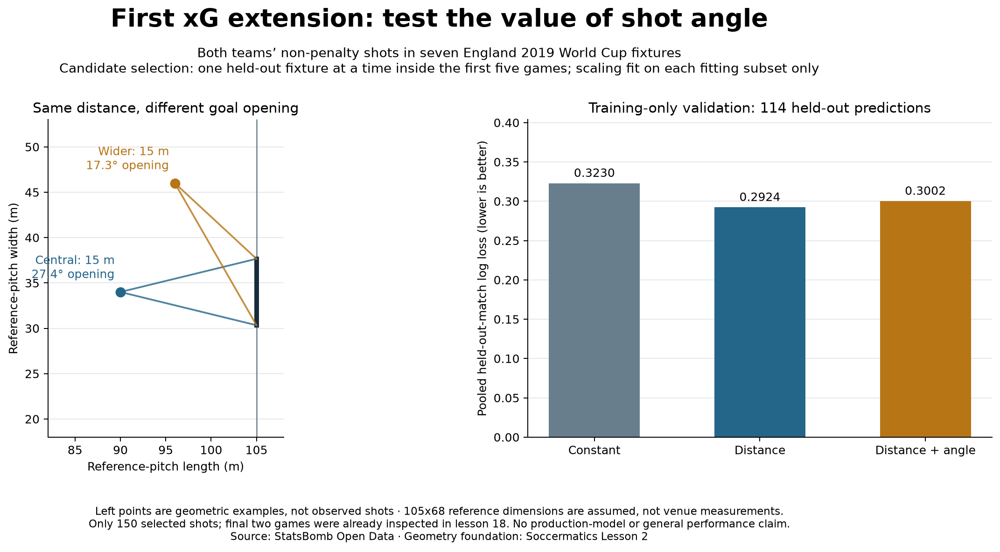

Football analyst training · Project lesson 25
Add information. Check whether it helps.
We are returning to xG modelling and moving faster through familiar material. The output is a goal probability. The new input is the opening angle between the two goalposts as seen from the ball.
1. Understand the new feature
Two shots can be equally far from goal centre but show different goal openings. In our reference-pitch examples below, both distances are 15 m: the central opening is 27.4 degrees and the wider opening 17.3 degrees. A feature is simply an input variable we give the model.

2. Compare candidates
- Constant: predict the fitting subset's goal rate for every shot.
- Distance: estimate probability using distance.
- Distance + angle: use both geometric features.
Both fitted candidates use the same assumed 105x68 reference geometry. This refits the distance baseline; our old lesson-18 distance used StatsBomb coordinate units. Reference metres are not actual measured venue dimensions.
3. Check predictions outside the fitting match set
Use only the first five training fixtures. Fit on four, predict the fifth, then rotate the held-out match. Each of the 114 training shots receives one prediction from a fit that excluded its fixture. This is grouped cross-validation. Scaling is also calculated from the fitting four only.
Compare log loss, a probability-error score: lower is better. We fixed this choice before comparing candidates. Its exact formula can wait; the important idea is to evaluate predictions that did not help fit that fold.
This does not mean angle is useless in football. Our sample contains only 150 shots and eleven training goals. The last two fixtures were already examined earlier, so their new scores are a reused exploratory check. A fresh, larger evaluation is still needed.
4. Find the important code
Open 25_shot_angle_model.py in Spyder. shot_geometry builds the features; leave_one_match_out creates the folds; fit_logistic fits and scales using its input subset only. The selected candidate is fixed from validation scores before the reused final-fixture check is calculated.
5. Practical analyst task
Write a three-sentence model-comparison note: what changed, what the validation result says, and what it does not establish. Do not describe this as a production xG model or claim that angle never matters.
Check your explanation
“I compared distance-only and distance-plus-angle candidates using held-out fixtures inside the training set. Distance-only had lower pooled validation log loss, so it was retained for this exercise. Five training fixtures and a previously inspected final check are insufficient to establish general model quality.”
Ask your teacher to review your note or explain a function. The implementation was prepared with assistance; independent explanation remains a separate milestone.
Previous: counting units · Model-comparison reference · Full report